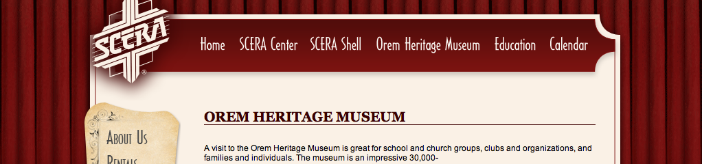

Since 2008, I have had numerous practical opportunities to work in libraries, archives, and museums. At the Orem Heritage Museum, I researched and developed exhibits about the World War II Geneva Steel mill. I was involved in the design and construction of a new exhibit for the museum and worked with their catalog for describing and maintaining item information.
I was also part of the effort to expand the museum's reach in new media, and specifically social media. I helped prepare video resources that were designed to engage the community in the use of the museum. I also served as a docent and frequently provided tours and explanations of artifacts to many who visited the site.